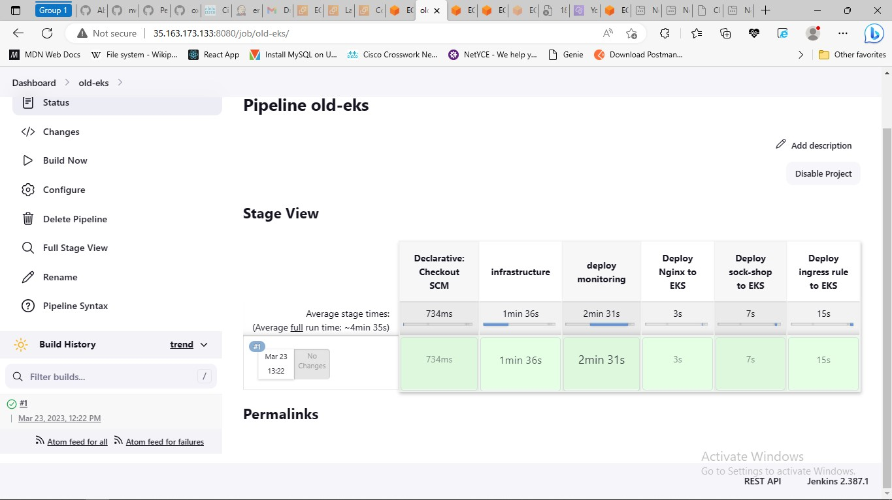

You are Welcome
I am a devops engineer, you can checkout my resume here.
I usally waste my time doing cool projects.
You can checkout
my projects on my resume, but if you are more tech savy, here is my
GitHub link.
You can visit my LinkedIn, here: LinkedIn
1.Terraform-beginner-bootcamp-2023

Built a secure and scalable static website on AWS using CloudFront and S3.
Implemented best practices for efficient content delivery, optimizing user experience. Demonstrated expertise in Terraform by streamlining infrastructure provisioning and troubleshooting issues, ensuring system stability and scalability.
2.Implemented a CI/CD Pipeline, Monitoring, Logging and Infrastructure for a Kubernetes Deployment
Established a CI/CD pipeline using Jenkins, Utilized Terraform to provision and manage infrastructure on AWS EKS, Implemented Prometheus for comprehensive monitoring of container and Integrated CloudWatch Logs for centralized logging and analysis.
3.Implemented a Webserver, NFS, DB and Load balancing Web Solution
4.Automated web application deployments infrastructure, configuration management, code analysis and CI/CD
Cheers!